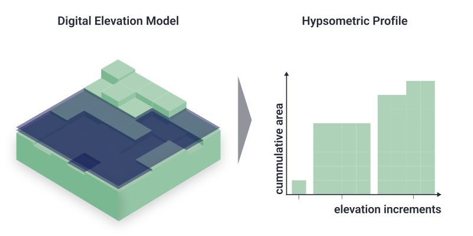

Flood exposure
Currently the main way to represent exposure in DIVACoast.jl is as HypsometricProfile. This is a special kind of coastal profile that allows for a very efficient computation of flood damages, which is beneficial for running large number of damage assessments as, e.g., required for many economic questions that involve optimization. In addition, DIVACoast.jl supports representing exposure via two dimensional grids, in which each grid cell is mapped to its elevation (or hydrological connectivity), as well as a set of exposure variables such as area, people or assets. DIVACoast.jl represents such gridded exposure as SparseGeoArrays. Functions are also provided to convert gridded exposure data to hypsometric profiles.
Hypsometric Profiles

A hypsometric profile represents a cross-section of the coastal zone, mapping elevation to the cumulative exposure below that elevation. It is calculated by incrementally increasing the water level and accumulating the exposures and exposed area at each step. For further analysis on theHypsometricPofil exposure values are linear interpolated between the initial waterlevel increments.A HyposmetricProfile holds two different types of exposure:
- Static Exposure, which is exposure that cannot be relocated. An example is land (area).
- Dynamic Exposure, which is exposure that can be relocated or adapted over time. Examples are people, who may move to higher elevations, or assets depreciating as mean and extreme sea-levels come closer over time.
Constructing Hypsometric Profiles
Currently, Hypsometric Profiles can constructed directly through a constructor, or indirectly from a NetCDF file.
Main.DIVACoast.HypsometricProfile — TypeHypsometricProfile(coast_length::DT, coast_length_unit::String,
elevations::Array{DT}, elevation_unit::String, area::Array{DT}, area_unit::String,
exposure_data::StructArray{T1}, exposure_units::Array{String}) where {DT<:Real,T1}A HypsometricProfile represents the variation in elevation from the coastline to inland areas. It can be constructed manually or by using load_hsps_nc() and a NetCDF-file.
Main.DIVACoast.load_hsps_nc — Functionload_hsps_nc(::Type{IT}, ::Type{DT}, filename::String)::Dict{IT,HypsometricProfile{DT}} where {IT<:Integer,DT<:Real}Load a netcdf file into hypsometric profiles. IT is the indextype (an integer type which is used to adress a specific profile), DT is the datatype (a floating point type which is used to store the data internally). Hypsometric profiles are not compressed.
Examples
julia> test = load_hsps_nc(Int32, Float32, "test.nc")
Dict{Int32, HypsometricProfile{Float32}} with 2716 entries:
2108 => HypsometricProfile{Float32}(1.0, Float32[-5.0, -4.9, -4.8, -4.7, -4.6, -4.5, -4.4, -4.3, -4.2, -4.1 … 19.1, 19.2, 19.3, 19.4, 19.5, 19.6, 19.7, 19.8, 19.9, 20.0], Float32[0.0, 0.0, 0.0, 0.0, …Main.DIVACoast.to_hypsometric_profile — Functionfunction to_hypsometric_profile(sga::SparseGeoArray{DT,IT}, width::DT2, min_elevation::DT2, max_elevation::DT2, elevation_incr::DT2)::HypsometricProfile where {DT<:Real,IT<:Integer,DT2<:Real}Function converts a SparseGeoArray object to a HypsometricProfile object. The function calculates the area of each elevation increment and stores it in the HypsometricProfile object. Elevation increments are calculated between a min_elevation and a max_elevation with a desired eleveation increment: elevation_incr. The function returns the HypsometricProfile object.
Arguments
sga::SparseGeoArray{DT,IT}: TheSparseGeoArrayobject to be converted.width::DT2: The width of the hypsometric profile.min_elevation::DT2: The minimum elevation of the hypsometric profile to be considered.max_elevation::DT2: The maximum elevation of the hypsometric profile to be considered.elevation_incr::DT2: Desired elevation increment.
Returns
HypsometricProfile: The hypsometric profile object.
Example
to_hypsometric_profile(sga, 1.0, -2.0, 20.0, 5.0)function to_hypsometric_profile(sga_elevation::SparseGeoArray{DT,IT}, area_unit::String, sgas_exp::Array{SparseGeoArray{DT,IT}}, exp_names::Array{String}, exp_units::Array{String}, width::DT2, width_unit::String, min_elevation::DT2, max_elevation::DT2, elevation_incr::DT2, elevation_unit::String)Creates a HypsometricProfile object from a SparseGeoArray object containing elevation data. It also calculates associated area affected and static/dynamic exposure at each elevation increment. The function returns the HypsometricProfile object.
Arguments
sga_elevation::SparseGeoArray{DT,IT}: TheSparseGeoArrayobject containing elevation data.area_unit::String: The unit of the area.sgas_exp::Array{SparseGeoArray{DT,IT}}: TheSparseGeoArrayobjects containing dynamic exposure data.exp_names::Array{String}: The names of the dynamic exposure data.exp_units::Array{String}: The units of the dynamic exposure data.width::DT2: The width of the hypsometric profile.width_unit::String: The unit of the width.min_elevation::DT2: The minimum elevation of the hypsometric profile to be considered.max_elevation::DT2: The maximum elevation of the hypsometric profile to be considered.elevation_incr::DT2: Desired elevation increment.elevation_unit::String: The unit of the elevation.
Returns
HypsometricProfile: The hypsometric profile object.
Example
to_hypsometric_profile(sga_elevation, "m²", sgas_exp, ["population", "assets"], ["individuals", "USD"], 1.0, "m", -2.0, 20.0, 5.0, "m")Base.:+ — Function function Base.:+(hspf1::HypsometricProfile{Float32}, hspf2::HypsometricProfile{Float32})Addtion of two Hypsometric Profiles. Adds (combines) the folling properties of the HypsometricProfiles:
Arguments
- Elevation: Combine Increments
- width: Adds the width of both HypsometricProfiles
- cumulativeArea: Adds the cumulative are of both HypsometricProfiles
- static Exposure: Adds the cumulative static exposure of both HypsometricProfiles
Main.DIVACoast.unit — Functionunit(hspf::HypsometricProfile, s::Symbol)
unit(hspf::HypsometricProfile, s::String)
returns the unit (of type String) of the exposure variable with name s (where s can be a string or a symbol)Main.DIVACoast.compress! — Functioncompress!(hspf::HypsometricProfile)Comress a hypsometric profile by removing colinear points. Calculations on compressed hypsometric profiles can be faster. Idempotent operation.
Querying Hypsometric Profiles
Main.DIVACoast.exposure — Functionexposure(hspf::HypsometricProfile{DT}, wl::Real, im::IM) where {DT<:Real, IM<:InundationModel}
exposure(hspf::HypsometricProfile{DT}, wl::Real, s, im::IM) where {DT<:Real, IM<:InundationModel}Calculate the cumulative exposure below elevatito a given water level (wl) for a hypsometric profile and all exposure variables in s given a inundation model. The default inundation model (if not specified otherwise) is bathtub inundation.
Arguments
hspf::HypsometricProfile{DT}: The hypsometric profile with elevation, area and exposure data.wl::Real: The water level for which exposure is calculated.s::String or s::Symbol or s::Array{String} or Array{Symbol}: An array of exposure variable names for which the damage is calculated. If only one variable is used please use the version with a single variable instaed of an array (the latter one might cause problems then).im::IM: the inundation model used to calculate the propagation of the water level.
Returns
Exposed area and exposure for elevations smaller than e.
Example
exposure(hspf, 10.0, "assets") # returns a number
exposure(hspf, 4.5, ["population","assets"]) # returns a 2-elment Array
exposure(hspf, 4.5, [:population,:assets], LinearDistanceAttenuatedInundation(0.1)) # returns a 2-elment ArrayModifying Hypsometric Profiles
Socio-economic development and adaptation changes exposure. For example, socio-economic growth increases the number of people and their assets in the coastal zone, while retreat reduces assets and people in the costal zone. To represent those process in DIVACoast, we provide the following functions.
Main.DIVACoast.multiply_exposure! — Functionfunction multiplyexposure!(hspf::HypsometricProfile{DT}, factors::Array{T}) where {DT<:Real,T<:Real} function multiplyexposure!(hspf::HypsometricProfile{DT}, s::Symbol, factor::T) where {DT<:Real,T<:Real} function multiply_exposure!(hspf::HypsometricProfile{DT}, s::String, factor::T) where {DT<:Real,T<:Real}
The multiply_exposure! function applies factors to all exposure data of a HypsometricProfile, where different factors for different variables are possible. This can be used to implement soci-economic growth. Versions for single variables exist.
Arguments
hspf::HypsometricProfile: the hypsometric profile to modify- factors: an array of factors, one for each variable of the profile
- factor: one factor for a specific exposure variable
- s: The name of the exposure variable to modify (apply the factor to)
Example
function multiply_exposure!(hspf, [1.0, 1.1])
function multiply_exposure!(hspf, :assets, 1.0)
function multiply_exposure!(hspf, "population", 1.1)Main.DIVACoast.multiply_exposure_above! — Functionfunction multiplyexposureabove!(hspf::HypsometricProfile{DT}, above::Real, factors::Array{T}) where {DT<:Real,T<:Real} function multiplyexposureabove!(hspf::HypsometricProfile{DT}, above::Real, s::Symbol, factor::T) where {DT<:Real,T<:Real} function multiplyexposureabove!(hspf::HypsometricProfile{DT}, above::Real, s::String, factor::T) where {DT<:Real,T<:Real}
The multiply_exposure_above! function applies factors to all exposure data above a given elevation of a HypsometricProfile, where different factors for different variables are possible. Versions for single varaibles exist.
Arguments
hspf::HypsometricProfile: the hypsometric profile to modify- above: the elvation, only exposure above this elevation is affected
- factors: an array of factors, one for each variable of the profile
- factor: one factor for a specific exposure variable
- s: The name of the exposure variable to modify (apply the factor to)
Example
function multiply_exposure_above!(hspf, [1.0, 1.1])
function multiply_exposure_above!(hspf, :assets, 1.0)
function multiply_exposure_above!(hspf, "population", 1.1)Main.DIVACoast.multiply_exposure_below! — Functionfunction multiplyexposurebelow!(hspf::HypsometricProfile{DT}, below::Real, factors::Array{T}) where {DT<:Real,T<:Real} function multiplyexposurebelow!(hspf::HypsometricProfile{DT}, below::Real, s::Symbol, factor::T) where {DT<:Real,T<:Real} function multiplyexposurebelow!(hspf::HypsometricProfile{DT}, below::Real, s::String, factor::T) where {DT<:Real,T<:Real}
The multiply_exposure_below! function applies factors to all exposure data below a given elevation of a HypsometricProfile, where different factors for different variables are possible. Versions for single varaibles exist.
Arguments
hspf::HypsometricProfile: the hypsometric profile to modify- below: the elvation, only exposure above this elevation is affected
- factors: an array of factors, one for each variable of the profile
- factor: one factor for a specific exposure variable
- s: The name of the exposure variable to modify (apply the factor to)
Example
function multiply_exposure_below!(hspf, 2.0, [1.0, 1.1])
function multiply_exposure_below!(hspf, 2.0, :assets, 1.0)
function multiply_exposure_below!(hspf, 2.0, "population", 1.1)Main.DIVACoast.remove_exposure_below! — Functionfunction remove_exposure_below!(hspf::HypsometricProfile{DT}, below::Real) where {DT<:Real}The remove_exposure_below! function removes exposure (assets and population) below a certain elevation.
Arguments
hspf::HypsometricProfile: the hypsometric profile to modify- below: the elvation, only exposure below this elevation is removed
Example
function remove_exposure_below!(hspf, 2.0)Main.DIVACoast.add_exposure_between! — Functionfunction add_exposure_between!(hspf::HypsometricProfile{DT}, above::Real, below::Real, values::Array{T}) where {T<:Real}The add_exposure_between! function adds assets / population between certain elevations.
Arguments
hspf::HypsometricProfile: the hypsometric profile to modify- above: the elvation, exposure gets only added above this elevation
- below: the elvation, exposure gets only added below this elevation
- values: the exposure values that get added
Example
function add_exposure_between!(hspf, 2.0, 3.0, [1000, 250000])Main.DIVACoast.add_exposure_variable! — Functionfunction add_exposure_variable!(hspf::HypsometricProfile, elevation::Array{DT},
exposure_data::Array{DT}, exposure_name::String, exposure_units::String)
where {DT<:Real}The add_exposure_variable! function adds a complete exposure variable to a HypsometricProfile. Exposure values to add are provided using the exposure_data parameter. Corresponding elevation increments need to be provided using the elevation parameter. The exposure_name and exposure_units parameters are used to name the exposure and provide units for the exposure values. The function harmonizes the elevation increments within the HypsometricProfile and the provided elevation increments. The function also compresses the HypsometricProfile
Arguments
hspf::HypsometricProfile: the hypsometric profile object to which the exposure data will be added.elevation::Array{DT}: the elevation increments that thehspf.elevationwill be resampled to.exposure_data::Array{DT}: the exposure values to be added to the profile.exposure_name::String: the name to be associated with the exposure data.exposure_units::String: the units of the exposure data.
Example
add_exposure_variable!(hspf, [0.0, 1.0, 2.0, 3.0], [0.0, 3000, 5000, 2000], "population", "individuals")Main.DIVACoast.remove_exposure_variable! — Functionfunction remove_exposure_variable!(hspf::HypsometricProfile, ind :: Integer)
function remove_exposure_variable!(hspf::HypsometricProfile, s: Symbol)
function remove_exposure_variable!(hspf::HypsometricProfile, s: String)Function removes a complete exposure variable from a HypsometricProfile at the index ind, or with name :s or s. The function removes the exposure data, the exposure name and the exposure units from the HypsometricProfile.
Arguments
hspf::HypsometricProfile: The hypsometric profile object from which the exposure data will be removed.ind::Integer: The index of the exposure data to be removed.ind::Integer: The index of the exposure data to be removed.ind::Integer: The index of the exposure data to be removed.
Examples
remove_exposure_variable!(hspf, 1)
remove_exposure_variable!(hspf, :population)Main.DIVACoast.add_exposure_above! — Functionfunction add_exposure_above!(hspf::HypsometricProfile{DT}, above::Real, values::Array{T}) where {T<:Real}The add_exposure_above! function adds exposure (assets / population) above a certain elevation.
Arguments
hspf::HypsometricProfile: the hypsometric profile to modify- above: the elvation, exposure gets only added above this elevation
- values: the exposure values that get added
Example
function add_exposure_above!(hspf, 2.0, [1000, 250000])Main.DIVACoast.land_raising! — Functionfunction land_raising!(hspf::HypsometricProfile{Float32}, min_e::DT) where {DT<:Real}The land_raising! function raises the elevation of a given hypsometric profile to a minimum elevation height min_e. The function returns the volume of land raised in m³.
Arguments
hspf::HypsometricProfile: the hypsometric profile object where the land will be raised.min_elevation::Array{DT}: the elevation increments that are below this threshold will be raised to this value.
Example
volume = land_raising!(hspf, 2.0)Two-dimensional gridded exposure
Currently, DIVACoast.jl only provides limited support for representing coastal exposure on a two-dimensional (2D) grid, but this will be added in future releases. In the current release, the main purpose of representing two-dimensional exposure data is to convert these to hypsometric profiles.